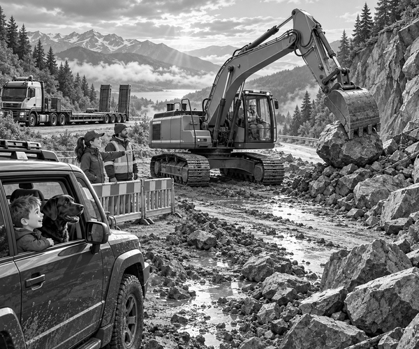

Rain had hammered the mountains all night.
By morning, Pine Top Quarry had a problem.
Its drainage ditch was blocked with stones.
More rain was coming.
The quarry needed a big excavator.
Ranger Mia had one ready.
The machine was called Atlas.
Atlas had wide steel tracks.
Its long boom folded over a huge digging bucket.
But Atlas could not crawl all the way up the mountain road.
Tracks are slow on long journeys.
They can also damage a hard road.
So Atlas rode on a low-loader trailer.
Trailer fact: A low-loader carries a tall machine close to the road. This lowers the load's height and helps keep its weight low and steady.
Mia checked the trailer chains.
One held each corner of the excavator.
The boom was folded down.
The bucket rested firmly on wooden blocks.
Dad drove the escort 4x4.
Tom and Scout sat safely inside.
Scout's black nose pressed near the window.
The convoy began to climb.
Rumble. Rumble. Rumble.
Muddy water ran beside the road.
Mist curled between the pine trees.
Then Mia saw red warning lights ahead.
She stopped the heavy truck.
A fresh rockfall covered the road.
Small stones lay across the mud.
Three huge rocks blocked the middle.
There was no room for the low-loader to turn.
Tom looked at the machine on the trailer.
“We brought a digger to a pile of rocks,” he said.
Dad smiled.
“Perhaps our cargo can help.”
But nobody rushed.
The road crew first checked the cliff.
They made sure no more rocks were moving.
Then they closed both ends of the road.
Tom and Scout stayed inside the escort vehicle.
It was parked far behind a strong barrier.
Mia moved the low-loader onto level, firm ground.
The crew lowered its ramps.
They removed Atlas's chains.
The excavator's engine started.
R-r-r-r-roar!
Atlas crawled backwards down the ramps.
Its wide tracks pressed into the mud.
The operator turned towards the rockfall.
Everyone stayed outside the excavator's working area.
The boom lifted.
The bucket opened.
Digger fact: Hydraulic oil pushes pistons inside strong cylinders. Those cylinders move an excavator's boom, arm and bucket.
The bucket slid beneath the first rock.
Crunch.
Atlas lifted it slowly.
The machine turned away from the road.
It placed the rock in a safe pile.
Thud.
The second rock followed.
The final boulder was too large for one scoop.
The operator used the bucket teeth to turn it.
He nudged one side.
Then he nudged the other.
The boulder rolled onto its flatter face.
Now the bucket could lift it.
Atlas carried the boulder clear.
The road crew swept away the smaller stones.
They checked the road surface.
At last, the route was open.
Atlas crawled back onto the trailer.
The bucket returned to its blocks.
The crew fitted all four chains again.
Mia checked every hook twice.
The barriers opened.
The convoy climbed towards Pine Top Quarry.
By lunchtime, Atlas was clearing the blocked ditch.
Water began to flow safely downhill.
Tom patted Scout.
“Atlas was the cargo,” he said.
“And Atlas cleared the cargo's road.”
Scout gave one pleased woof.
1. What was Mia carrying on the low-loader?
2. Why did the road crew check the slope?
3. How did Atlas open the road?